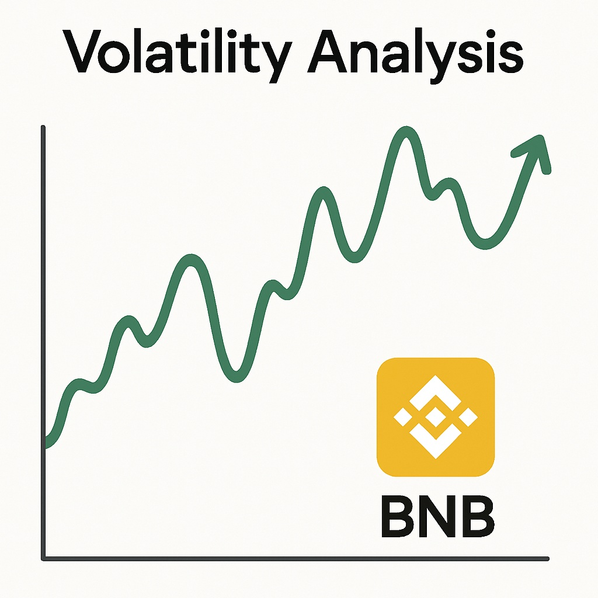

BNB Price Prediction for End of 2025: In-Depth Analysis and Insights
The information in this article is provided for educational purposes only and is not investment advice. Cryptocurrency investments carry risks.
Introduction
As of August 20, 2025, 01:12 AM EEST, BNB is trading at approximately $580, solidifying its position as the native token of the Binance ecosystem, one of the largest cryptocurrency exchanges globally. Originally launched as Binance Coin, BNB powers transactions, DeFi applications, and smart contracts on the Binance Smart Chain (BSC), a high-performance blockchain known for low fees and fast transactions. Its utility in trading fee discounts, staking, and DeFi ecosystems makes BNB a cornerstone of the crypto market. This article provides a comprehensive analysis of BNB’s price outlook for the end of 2025, exploring bullish and bearish scenarios, key growth drivers, and potential risks based on current market trends and ecosystem developments.
Current Situation
As of August 20, 2025, BNB’s price stands at around $580, reflecting a 22% increase from June 2025, when BNB traded at $475. Over the past 30 days, BNB has shown consistent strength, with 59% of days closing in the green and a moderate volatility of 4.9%. The Fear and Greed Index at 71 indicates robust investor confidence, driven by Binance’s growing ecosystem, increasing DeFi activity on BSC, and global adoption of BNB for payments and staking. Over the past year, BNB’s price has risen from $360, achieving a 61% gain. Since 2020, when BNB was valued at $22, it has grown by over 2500%, fueled by Binance’s dominance and BSC “‘s expanding use cases.
Price Predictions for End of 2025
Analyst forecasts for BNB by December 2025 vary based on market conditions. Bearish scenarios suggest a potential decline to $420 if a projected 30–40% market correction occurs in early 2025. Moderate projections estimate BNB stabilizing between $650 and $800, supported by steady growth in BSC’s DeFi and NFT ecosystems. Bullish forecasts predict BNB could reach $900–$1,100, particularly if a market rally occurs between February and April 2025. Some analysts project BNB hitting $850 by October 2025 if Binance continues to expand its ecosystem and global reach.
Factors Driving Price Growth
- Binance Ecosystem Growth: Binance’s global dominance as an exchange and the expansion of BSC drive BNB’s utility and demand.
- DeFi and NFT Adoption: BNB’s role in powering low-cost transactions for DeFi protocols and NFTs on BSC enhances its value.
- Fee Discounts and Staking: BNB’s utility for trading fee discounts and staking rewards attracts users and investors.
- Market Rally: A projected cryptocurrency market surge in 2025, particularly from February to April, could create a favorable environment for BNB’s price growth.
- Global Adoption: Increasing use of BNB for payments, remittances, and cross-border transactions boosts its real-world utility.
Risks and Downward Factors
- Market Volatility: A projected 30–40% market correction in early 2025 could exert downward pressure on BNB’s price, impacting investor sentiment.
- Regulatory Risks: Stricter global regulations targeting centralized exchanges like Binance could limit BNB’s accessibility and adoption.
- Competition: Growing competition from other layer-1 blockchains, such as Ethereum and Solana, could challenge BSC’s market share.
Volatility Analysis
From July to August 2025, BNB’s price rose from $475 to $580, marking a 22% gain with a volatility of 4.9%, indicating relative stability compared to historical trends. Annual growth of 61% underscores BNB’s strong performance. Technical indicators, including bullish trends in the 50-day and 200-day Exponential Moving Averages (EMAs), suggest continued upward potential. A projected market recovery from February to April 2025 could further support price growth, particularly as Binance expands its DeFi and NFT ecosystems. BNB’s strong utility and Binance’s global influence position it well for sustained adoption and value appreciation.
Conclusion
By the end of 2025, BNB’s price is projected to range between $650 and $900, with the potential to reach $1,100 in a bullish market driven by Binance’s ecosystem growth, DeFi and NFT adoption, and global utility. However, investors should remain cautious of market volatility, regulatory uncertainties, and competitive pressures. Thorough research and risk management are essential before investing in BNB.